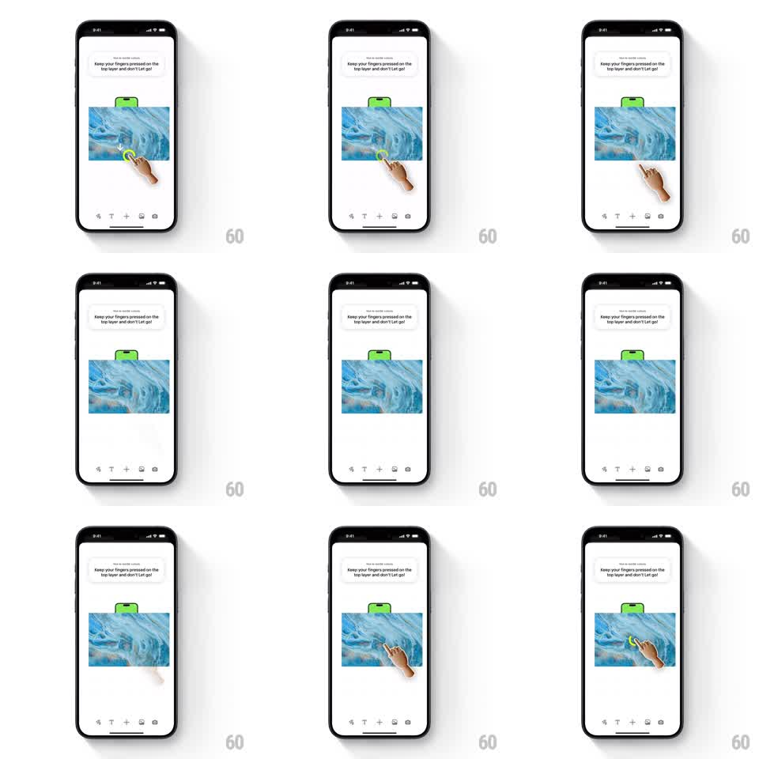

Media
Frame-by-frame

Rebuild this animation 1:1: Pinterest's collage-editor onboarding tooltip - a green speech bubble instructs "Keep your fingers pressed on the top layer and don't let go!" while an animated hand with a yellow touch ring presses and holds the image, which lifts in response.

Rebuild this animation 1:1: Pinterest's collage-editor onboarding tooltip - a green speech bubble instructs "Keep your fingers pressed on the top layer and don't let go!" while an animated hand with a yellow touch ring presses and holds the image, which lifts in response.
## Integration
Integration: stack-agnostic spec - springs given as stiffness/damping, timed motions as duration + curve; map every value to your framework and animation library of choice.
## Scene
Collage editor: a blue-marble image on a white canvas, a green tooltip bubble anchored above it ("Keep your fingers pressed on the top layer and don't let go!"), an illustrated hand with a yellow ring at the fingertip, and a bottom toolbar (undo, text, plus, image, camera icons).
## Motion spec
Pattern: guided press-and-hold demo loop.
- The hand glides in and settles its fingertip (yellow ring) onto the image (~400ms, ease-out).
- Touch-down: the yellow ring pulses once (scale 1 -> 1.3 -> 1, ~300ms) and the image lifts - scale 1 -> 1.04 with a deepening shadow (~250ms, spring ~300/24) - communicating "this layer is now held".
- Hold: hand stays planted ~1s; the tooltip nudges gently (translateY 2px loop).
- Release: image settles back (spring, slight overshoot), hand glides off, loop restarts after ~800ms.
- Toolbar and canvas stay static.
## Calibration
- The lift is small (4%) but the shadow doubles - depth sells the hold, not scale.
- Tooltip bubble points at the touch point and never covers it.
## Reduced motion
Hand fades between positions; image highlights without lift.
## Don't miss
- The yellow ring is the touch indicator - it leads the press, appearing a beat before the lift.
- The demo loops cleanly: full reset between cycles, no leftover states.